OKAERIBOT制作過程
1.発想
一人暮らし生活の寂しさを減らせるものを作りたかったので、どんなものならそれができるかを考えた
小さいロボット：ちゃんとしたものでないと、おもちゃぐらいにしかならないので寂しさは減らない。記述が足りてない。
->ロボットの機能から声をだすだけなら自分でも作れそう
->家に入った時すきな人の音声を流す装置
:arduinoに、磁気センサー（ドアスイッチ）と人感センサーを繋いで条件を満たしたらSDカードに保存した音を鳴らす。
条件：門が開けていて＋人が通る
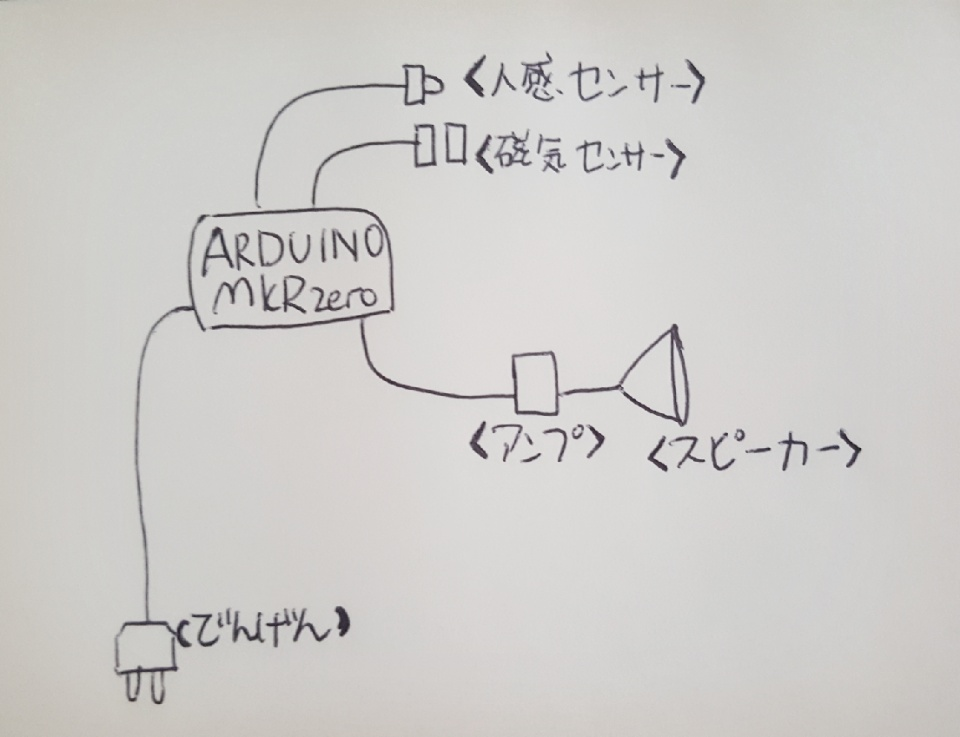
設計図
2.制作計画
設計図を描き、必要な材料を購入し、計画を立つ
・制作計画
① プログラミング
- arduinoの勉強：各センサーでLEDを光らせる
- ２つのセンサーで音を鳴らす
② 側を作る
- サイズを測って設計図を描く
- Tinkercadで作成・印刷
③ 使用動画を取る
購入した材料
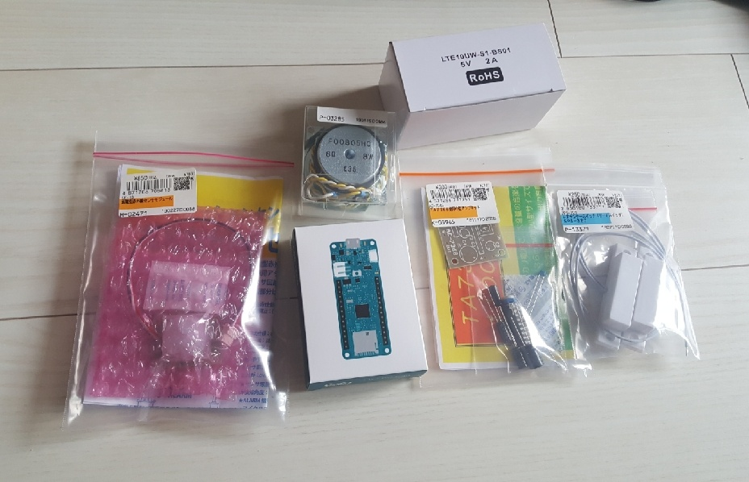
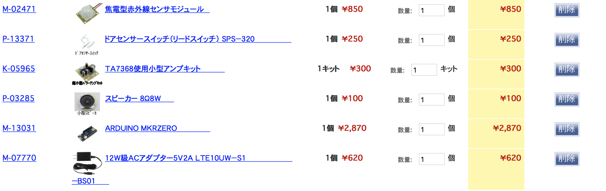
『① プログラミング』
⑴ arduinoの勉強：各センサーでLEDを光らせる
・人感センサー
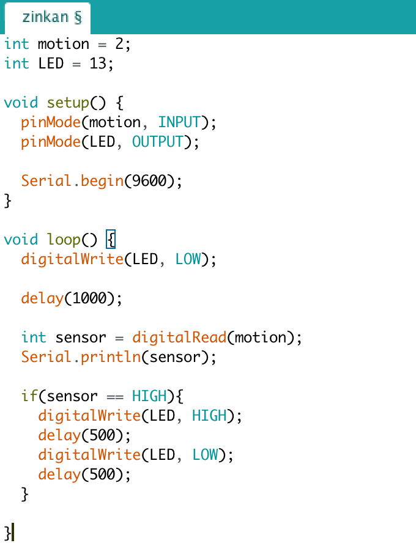
人を検知したら０、してなかったら１をシリアル通信に表示する。
（検知したらLOW、してなかったらHIGH)
なので、人がいたらLEDがひかる。人がいたら（検知したら）LEDは光らない。
・磁気センサー
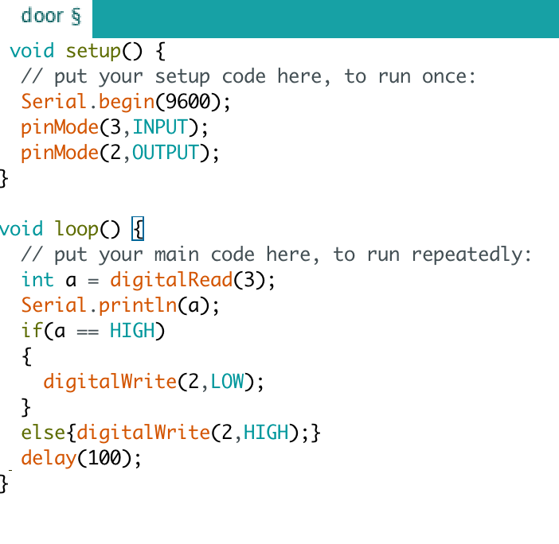
門が開けていたら０、閉じていたら１をシリアル通信に表示する。
門が開けていたら（門の信号がLOWなら）LEDはHIGH（ひかる）、閉じていたら（門の信号がHIGHなら)LOW（光らない)
動画もあります。
⑵ ２つのセンサーで音を鳴らす
センサーを２つ繋いで、音がなる条件を作る：本番のプログラミングを始める。
（アンプとスピーカーはんだ付けしておく）
コードの出所：
ArduinoSoundWavePlaybackのものを拾って実験。
・WAV（音声）を準備
聞きたい音声をWAVファイルに変換：Audacityを利用
：このコードで必要とするフォーマット（音声ファイルをstereo signed 16 bit・44100Hz）に変換し、SDカードに入れる。
SoundWavePlaybackのいらないどころを消す。（bits per sample,channels,samplerate,durationなど）
センサーなしで音が出るのか確認して、音が出たらセンサーをつなぎ、コードにセンサーの条件を書き込む。
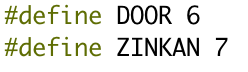
ー＞ピン６、７を各DOOR、ZINKANに定義（宣言）。
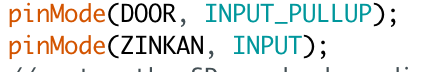
DOORピン（６）をプールアップ抵抗に設定（宣言）。
ZINKANピン（７）をインプットに設定（宣言）。
これでこの⑵つはセンサーとしてインプットの役割を実行するようになる。
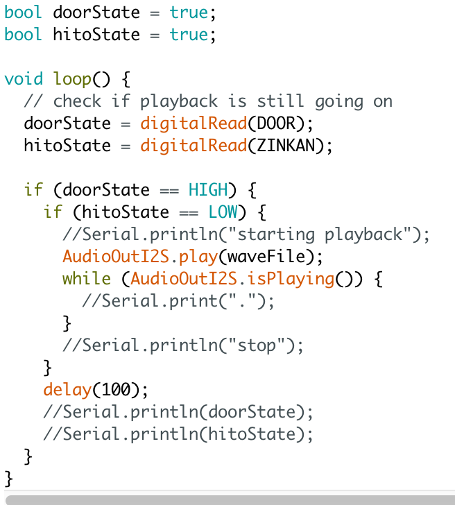
void loopのどころ。
bool: trueかfalseかだけを表す。スイッチが押されたかを表すに有用
DOOR、ZINKANピンを各doorState,hitoStateというボックスに入れる。（宣言）
IF文の使用： ”もし、doorStateがHIGHだったら、hitoStateがLOWかを調べて、audioを再生する”
ー＞”もし、門が開いたら（HIGH）、人が通るか（LOW)調べて、二つの条件を満たしたら音をだす”という意味になる。
（while文は、実験中シリアル通信をするため書いたものなので、作動にはいらない）
（シリアル通信も作動のはいらないし、書いたままだと電源では作動してなかったので、消しておいた）
これで、条件を満たしたとき音を鳴らすに成功。装置の中身は完了。
『② 側を作る』
⑴ サイズを測って設計図を描
３Dプリントで印刷することにして、定規で装置をはかり、どんな外観にしていくか考えた
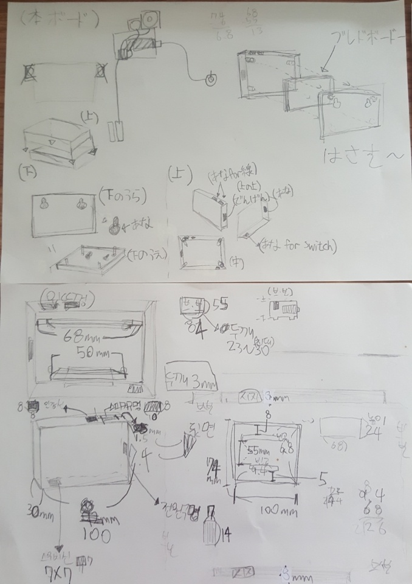
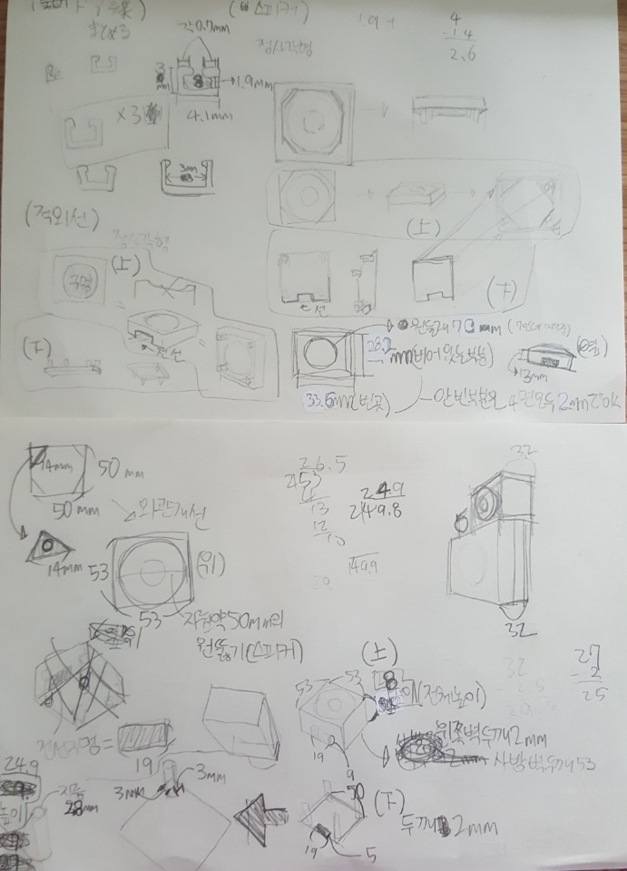
左：本体・右：スピーカー、人感センサー のケース設計図。
（意味は自分しか知らないと思うので、絵だけみてください）
以下は主要な部分の写真
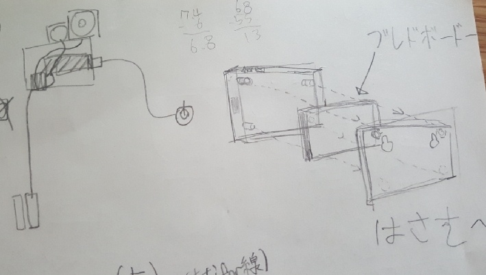
・OKAERIBOTの全体できな見た目（仕組み）と、本体をくるむケースの絵
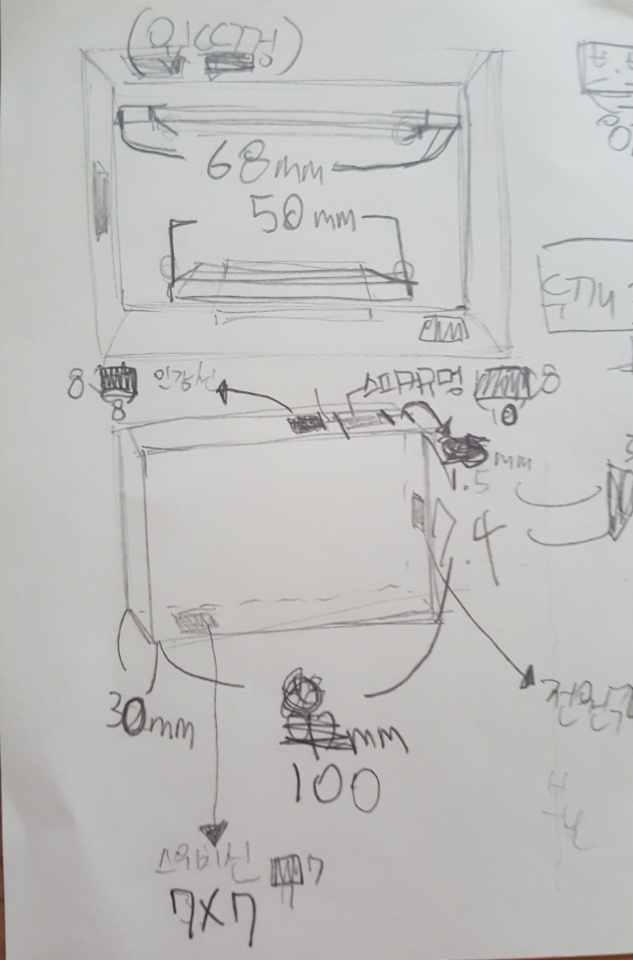
・本体のケースの上、下。サイズを測ったもの
⑵ Tinkercadで作成・印刷
測ったものと書いた図を見ながらTinkercadで３Dモデリングを作る
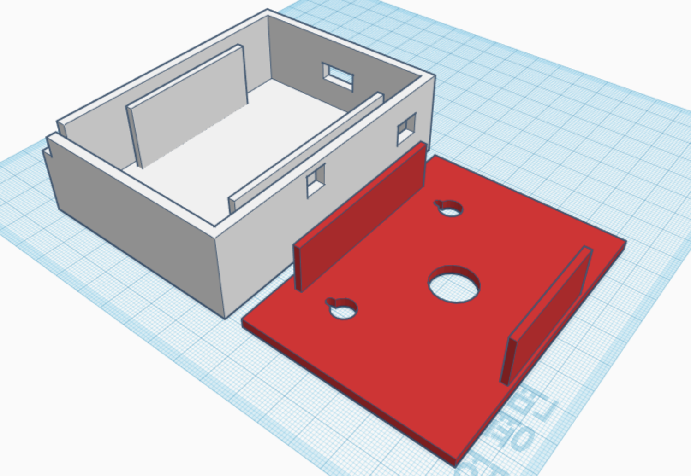
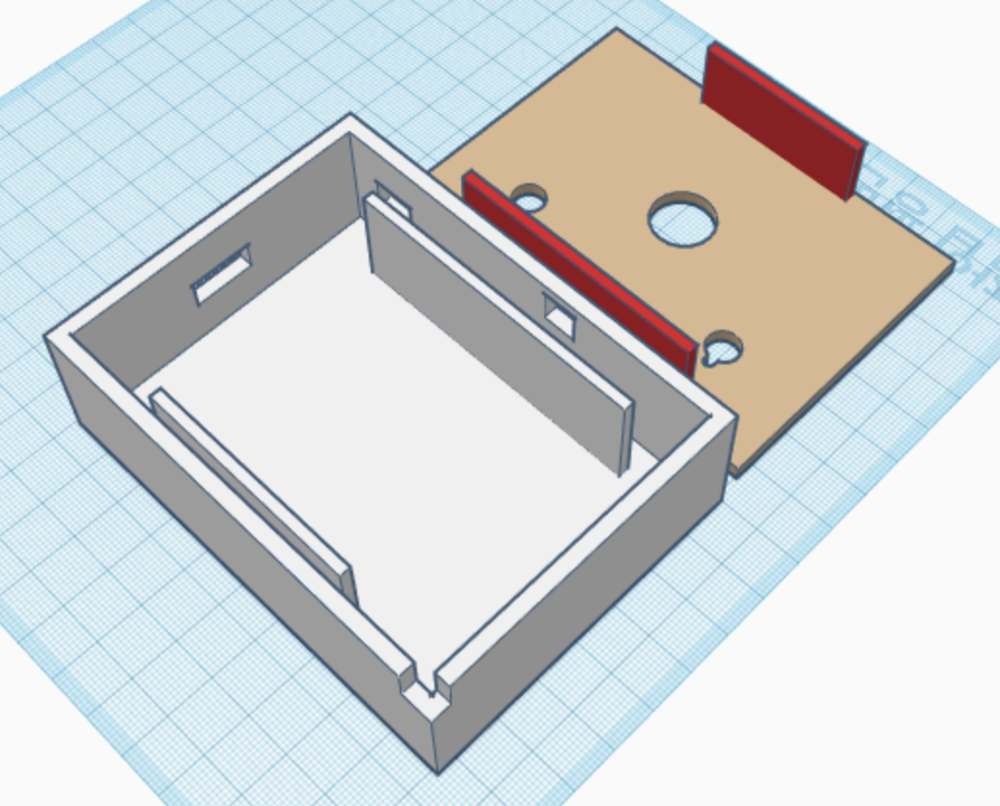
本体のケース（上と下）
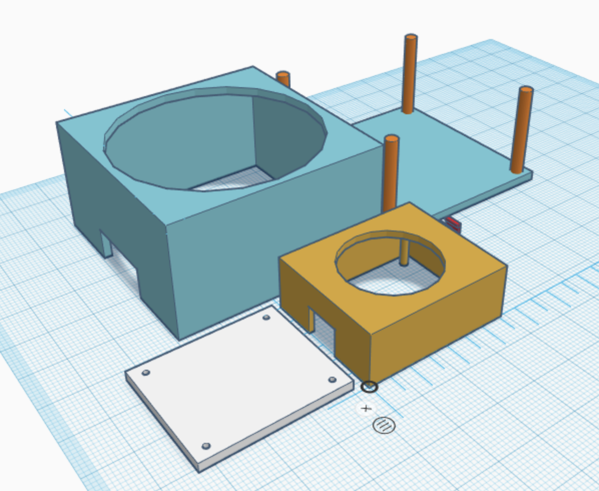
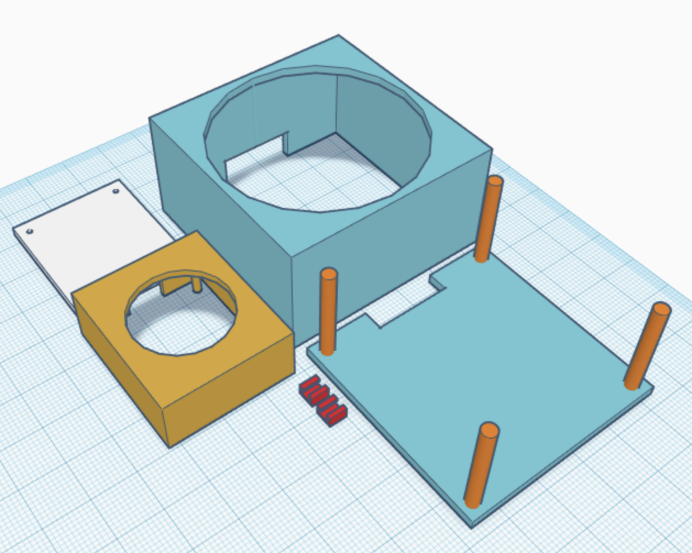
スピーカーと人感センサーのケース
印刷物
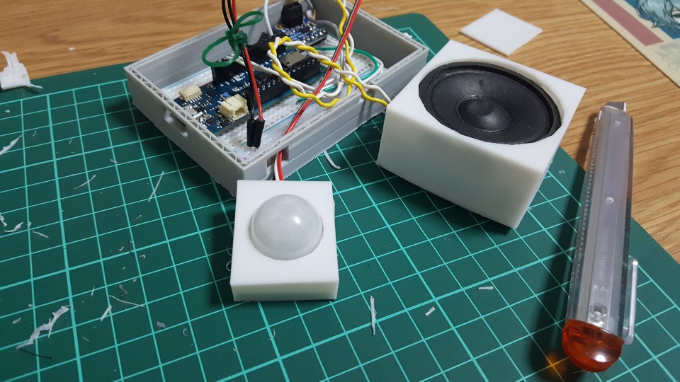
スピーカー、人感センサー
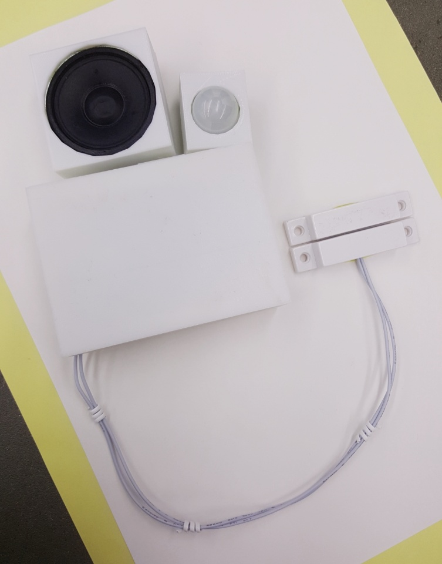
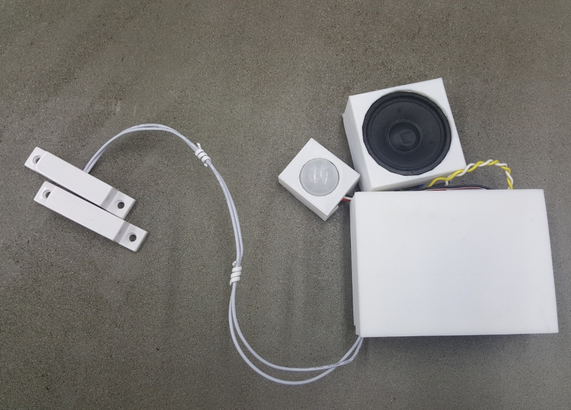
本体（完成品）
『③ 使用動画を取る 』
本体のケースがまだできてない時にとった動画なので、最終的な見た目とは差があります。
3.感想
個人的には、今までやったクロステックの授業の中で一番難しくて一番頑張ったと思います。
販売するものを作るという心持ちで作ったもので色々愛情を込めました。
今の自分は２ヶ月以前とは違って、プログラミングをやったことがある人になっています。
プログラミングが初めてで、見ていてもわからないことだらけで、時間が長くかかりました。
その分勉強になったとも思いますが、ケースを可愛く作るのはそんなに力をいれれなかったので惜しいです。
”売りる見た目”について、考えるきっかけにもなりました。
想像したものを作ったことと、電子工作に挑戦したことは嬉しいです。
プログラミングのどこは、先生の助けがなかったらできなかっと思うので感謝しています。